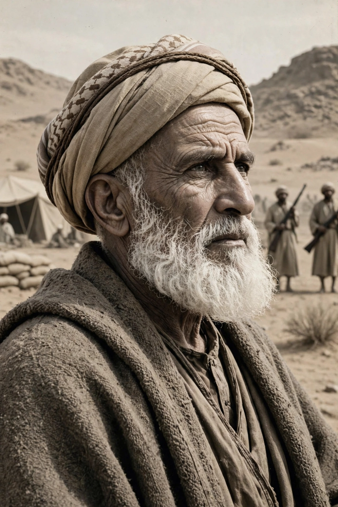

Omar al-Mukhtar (c. 1858 – 16 September 1931), known as the Lion of the Desert, was a Libyan resistance leader who led the Senussi resistance against Italian colonisation of Libya for nearly twenty years, from 1911 until his capture and execution in 1931.

| Born | c. 1858, Cyrenaica, Ottoman Tripolitania |
|---|---|
| Died | 16 September 1931, Suluq, Italian Libya |
| Known for | Resistance to Italian colonisation |
Born in the region of Cyrenaica, Mukhtar was a Qur'an teacher and Senussi sheikh. After Italy invaded in the Italo-Turkish War of 1911, he organised guerrilla bands that used intimate knowledge of the desert to ambush Italian columns.
Under General Rodolfo Graziani, Italy walled the Egyptian border, established concentration camps and devastated the supporting population. Mukhtar was wounded and captured in September 1931, tried by a military court, and hanged at Suluq before thousands of camp prisoners, aged about 73.
Mukhtar is a national hero of Libya, depicted on the 10-dinar note. His story was dramatised in the film Lion of the Desert (1981), starring Anthony Quinn.